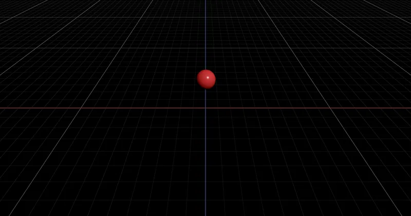

3D > Objects & Geometry > Coordinate Transformation
screenToWorld - RedGPU WebGPU Example
An example showing how to convert screen coordinates to world coordinates.
화면(스크린) 좌표를 월드 좌표로 변환하는 방법을 보여주는 예제입니다.

3D > Objects & Geometry > Coordinate Transformation
An example showing how to convert screen coordinates to world coordinates.
화면(스크린) 좌표를 월드 좌표로 변환하는 방법을 보여주는 예제입니다.
